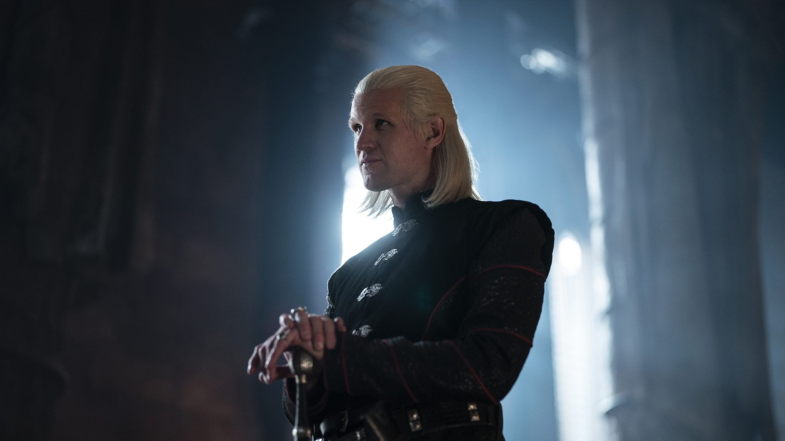
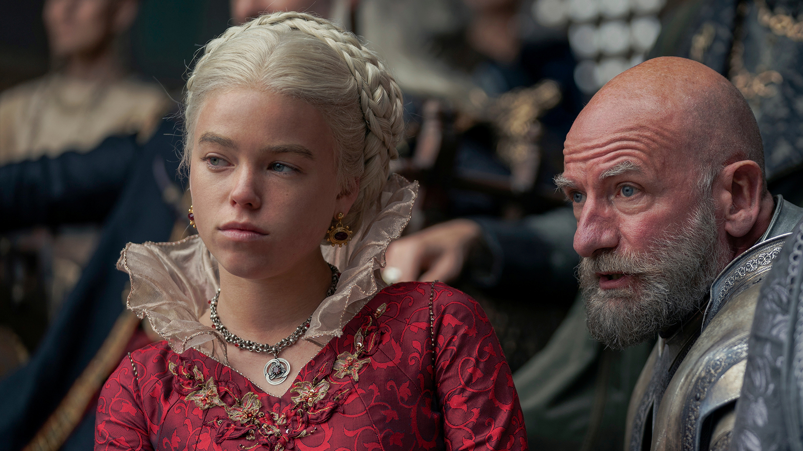
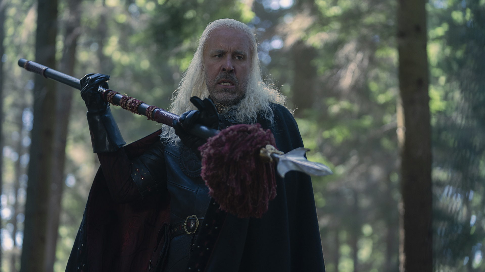
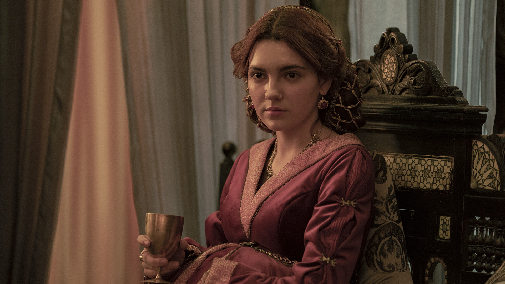
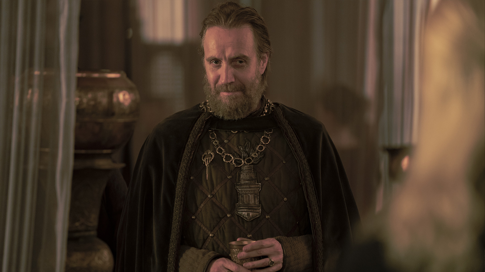
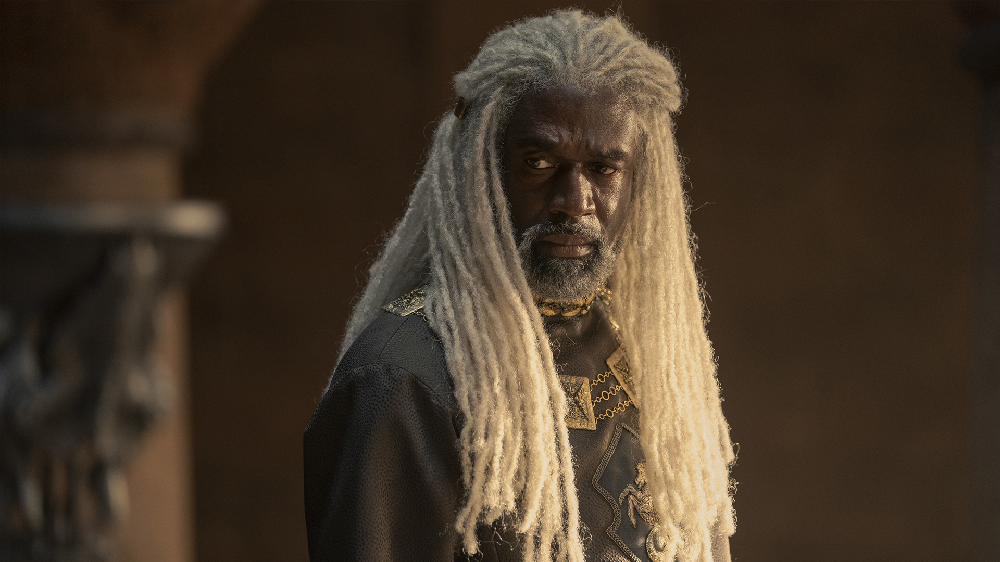
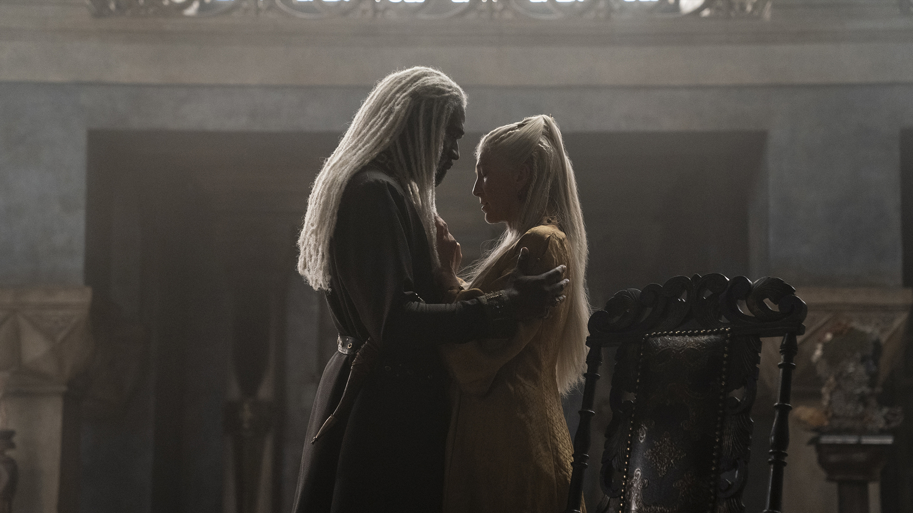

King Jaehaerys I Targaryen, known as Jaehaerys the Conciliator, was the fourth king of the Targaryen dynasty. The longest-reigning king in the history of the Seven Kingdoms, he is known for building the Kingsroad and reconciling with the Faith after the Faith Militant uprising.

Daemon Targaryen
Prince Daemon Targaryen is a prince of the Targaryen dynasty, the younger brother of King Viserys I Targaryen, and uncle of Princess Rhaenyra Targaryen.

Rhaenyra Targaryen
Princess Rhaenyra Targaryen is the daughter of King Viserys I Targaryen and Aemma Arryn. A dragonrider, her mount is the she-dragon Syrax.

Viserys I Targaryen
King Viserys I Targaryen is the fifth king of the Targaryen dynasty to rule the Seven Kingdoms.
Viserys I is the grandson of Jaehaerys I Targaryen, and father of Rhaenyra. He briefly rode Balerion the Black Dread in his youth before the dragon's death of old age.

Alicent Hightower
Queen Alicent Hightower is the second wife of King Viserys I Targaryen and daughter of Ser Otto Hightower, the Hand of the King.

Otto Hightower
The gods have yet to make a man who lacks the patience for absolute power, Your Grace."
―Otto to Viserys I Targaryen

Corlys Velaryon
Lord Corlys Velaryon, known as the Sea Snake, is the head of House Velaryon and the husband of Princess Rhaenys Targaryen.

Rhaenys Targaryen
Princess Rhaenys Targaryen, also known as Rhaenys Velaryon, is a princess of the Targaryen dynasty, and the wife of Lord Corlys Velaryon. She is a dragonrider, her mount being Meleys, the Red Queen.
Changes
In the novels, House Velaryon are generally described as "having pale skin, silver hair, and purple eyes", however, Condal and Sapochnik wanted to include more racial diversity with its casting. Condal stated, "The world is very different now than it was 10 years ago when [Game of Thrones] all started. It's different than 20 years ago when Peter Jackson made The Lord of the Rings. These types of stories need to be more inclusive than they traditionally have been. It was very important for Miguel and I to create a show that was not another bunch of white people on the screen, just to put it very bluntly." According to Condal, Martin had previous considered the idea of making the Velaryons a House of Black nobles in his novels.
Viewership
The day following the series premiere, HBO claimed the episode had been viewed by an estimated 9.99 million viewers in the U.S. on its first night of availability – including both linear viewers and streams on HBO Max – which HBO said was the largest single-day viewership for a series debut in the service's history.[54] In announcing a second-season renewal four days later, the network said the premiere episode had been watched by over 20 million linear, streaming, and on-demand viewers in the U.S. by that point.[55] After one week of availability, the viewership of the premiere rose to nearly 25 million in the U.S. across all platforms